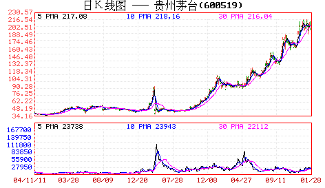
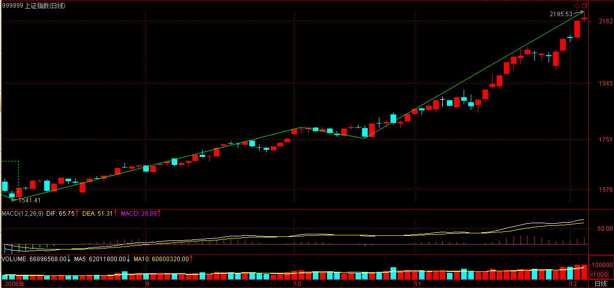
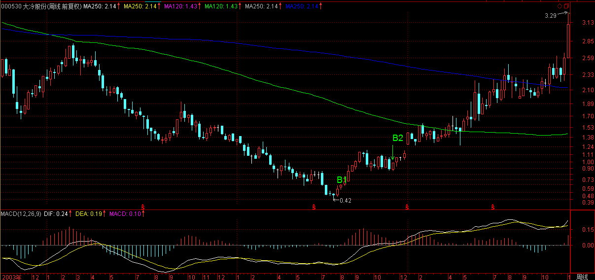
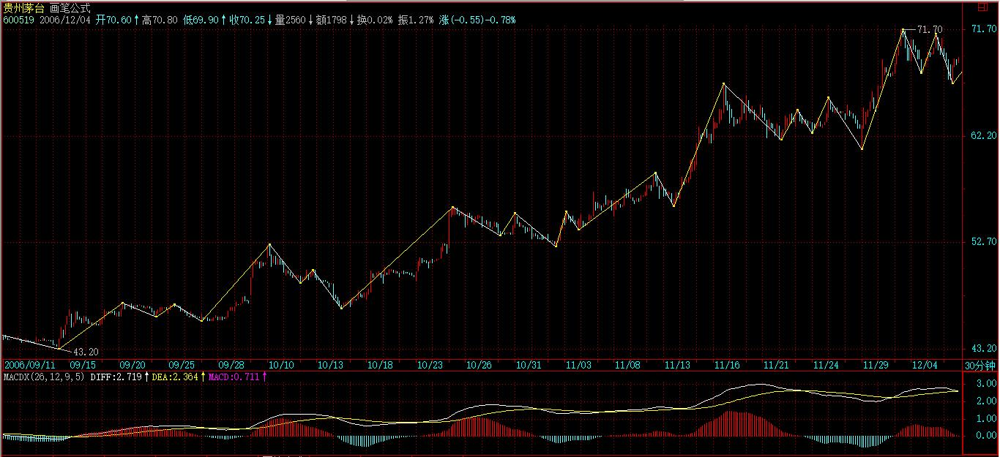
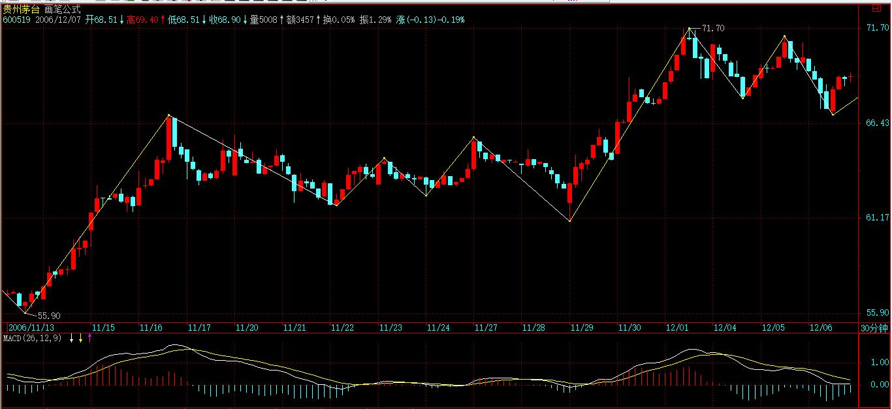
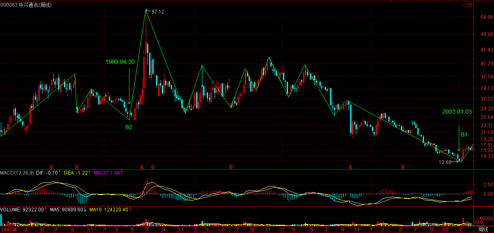
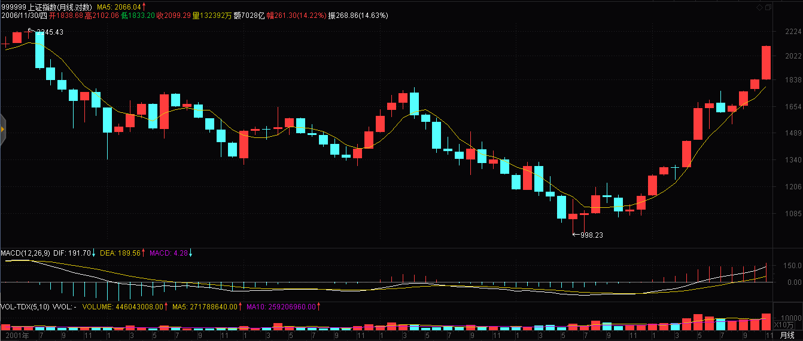

(2006-12-05 11:35:20)

【韶山映山红】原文配图是600519贵州茅台的日K线图。新浪博客自动更新为当下的新图，这里贴上当时完整的日K线图和周K线图。】
前面说了很多理论上的东西，现在用一个实际的股票来说明一下具体的用法。就用茅台吧，边喝茅台边上课。这里先假设所有看的人都能找到茅台上市以来的周线和日线图。
前面说过两条均线间“吻”的三种方式，其中的湿吻是最明显的缠绕例子，而飞吻和唇吻是缠绕的特殊例子，在均线操作系统中所指的缠绕，包括这三种吻。【韶山映山红】缠论均线操作系统所说的缠绕，包括飞吻、唇吻和湿吻这三种方式。其中的湿吻有均线的交叉，是最明显的缠绕例子，而飞吻和唇吻并没有什么视觉上的交叉，属于缠绕的特殊情况。】而从实际的比例看，湿吻出现的几率是最大的，但在长期均线系统中，例如周线、月线等，唇吻的例子比例也很大。
【韶山映山红】一般的理解，飞吻，唇吻，湿吻，这是一个渐进的过程，也就是说，最多的应该是飞吻，其中一部分发展成唇吻，少数的进一步发展成湿吻。这里却反过来了，湿吻最多，唇吻要在长期均线系统中才多，也就是说，日线和分钟线的唇吻并不多。而飞吻，干脆都没有被提及。应该怎么理解呢？
一般来说，短期均线走平就是飞吻的状态，但是，长期均线也会相应的受影响，从而使得短期均线被动地靠近长期均线，甚至交叉。所以，只有当长期均线很平缓，短期均线很急剧的离开，两个均线有足够大的间距的时候，才能形成飞吻。所以飞吻难得。
而唇吻，短期均线靠近长期均线但不跌破或升破，然后按原来趋势继续下去。这里描述的形态是，一个图上的趋势型走势，形成明显可见的次级别盘整，还不能走成线段类趋势，所以也不常见。
12课说：唇吻，任何一段基本的趋势过程中最常见到的方式，特别在“男上位”的情况下，基本都是这种方式，一旦出现唇吻反弹基本就该结束了，在“女上位”的情况下，调整结束的概率也是很大的，但也要预防唇吻演变成湿吻；
那么，真正最常见的是什么呢？两个均线的忽近忽远，不足以成为吻的状态。吻，往往意味着有一个次级别反向走势。】
先复习一下相关定义：
飞吻：短期均线略略走平后继续按原来趋势进行下去。【韶山映山红】短期均线略略走平的时候，长期均线不会有明显的变化，所以短期、长期均线差的波形会略微的形成了一个凹形。】
唇吻：短期均线靠近长期均线但不跌破或升破，然后按原来趋势继续下去。【韶山映山红】短期、长期均线差形成了一个波谷。】
湿吻：短期均线跌破或升破长期均线甚至出现反复缠绕，如胶似漆。【韶山映山红】短期、长期均线形成上穿/下穿，均线差出现翻转。】
女上位：短期均线在长期均线之上。
男上位：短期均线在长期均线之下。
【韶山映山红】短期均线略略走平就是飞吻，可见，女上位和男上位的时候，两个均线差不多是平行的关系。所以，体位实际上是缠论的远古时代对趋势的一种描述。】
第一类买点：用比较形象的语言描述就是由男上位最后一吻后出现的背驰式下跌构成。【韶山映山红】对下跌走势来说，形成吻的就是短期均线向上的反弹，最后一次反弹之后的下跌形成背驰。】
第二类买点：女上位第一吻后出现的下跌构成。【韶山映山红】第二类买点的这个下跌，就是形成第一吻的下跌。】
现在，先打开茅台的周线图，
在茅台快6年的周线图上，用5周与10周均线构成的买卖系统，只有第一类和第二类买点各一个，可见，在周线图上，按均线系统构成的买点并不常见，一旦出现必须珍惜。
仔细分析：2002年4月19日那周，【韶山映山红】前一周K线看上去均线交叉，具体的数据：MA5是37.80元，MA10是37.78元，所以是2002年4月19日这一周MA5下穿MA10的。】茅台进入男上位，【韶山映山红】如果不是复盘，这个当下怎么知道是进入男上位还是继续原来的缠绕？★以后研究。】
其后在2002年7月9日那周进入男上位的第一吻，【韶山映山红】笔误，2002年7月9日不是周五，应该是2002年7月5日那周。前一周均线交叉，具体的数据：MA5是35.41元，MA10是35.48元，所以是2002年7月5日这一周MA5上穿MA10的。】
前面已经说过，这第一吻后的下跌一般不会构成买点，必须是至少第二吻以后。【韶山映山红】男上位的每一次吻就是一次反弹，判断反弹过后的下跌是否构成买点，其实就是下跌＋盘整＋下跌的背驰判断。具体到这个例子，应该是因为没有盘整的过程，第一次反弹实际上只是一次很短暂的异动。】
其第二吻出现在2003年2月14日那周，【韶山映山红】2002年12月20日那周也有MA5上穿MA10的情况，但是被忽略了，是不算？还是缠师失误没看见？★以后研究。】这里2002.12.20的那次反弹之后的下跌，单纯从吻的角度看，新低并且背驰了，只是图上明显的内部下跌力度大，没有区间套，也无法做背驰点的定位，之后算是小转大的盘整。】是典型的湿温，【韶山映山红】什么是典型的湿吻？言下之意，前面的均线交叉都不典型？★以后研究。】
其后在下跌并没构成背驰，不符合第一类买入点的原则。【韶山映山红】这里是怎么判断没有构成背驰的？★以后研究。】之前的大跌之后，MACD没有充分地拉回0轴，也没有形成绿柱子，还是同一个级别的下跌没有走完。有买点，但不是周线级别的。】
然后在2003年6月27日那周构成第三吻，是一个不太强烈的湿吻，【韶山映山红】这个吻，比前面2002年12月20日那个被忽略的，更加不太强烈。】
其后的下跌就出现了明显的背驰走势，在MACD图上，绿柱子比上一次的明显缩短，而低位却低于上次绿柱子出现时的低位。【韶山映山红】这里是原文第一次说MACD。明显的背驰走势：K线新低了，MACD绿柱子明显缩短。】这里MACD还没有拉回0轴，还是同一个向下的走势，没有走完，只是后一次的绿柱子的最高，比前一次的绿柱子的最高，要短。这里，看绿柱子的面积，也背驰。】
如何判断背驰走势结束，最简单的就是当绿柱子缩短，而股价继续创新低，这次，明显地发生在2003年9月26日这一周，意味着底部出现，第一类买点构造完成，可以大举介入了。【韶山映山红】这里说的是更低一个级别，后一次内部背驰。绿柱子开始由长变短，而股价继续创新低。】
第一类买点出现后，茅台也正常地改变体位，进入女上位，【韶山映山红】这里的第一类买卖点不是趋势背驰的买卖点，是走势类型的分界点。】这里说，正常地改变体位，也就是还有不正常的，没有改变体位的。】
一直到2004年6月4日那周出现女上位后的第一吻，【韶山映山红】女上位的吻就是回调。】
其后的下跌构成周线上的第二类买点。【韶山映山红】这时候怎么知道是反转还是继续女上位？以后研究。】
这里有一个很重要的技巧，就是第二类买点如何精确地把握，由于在周线女上位后第一吻的调整不构成明显的下跌走势，因此对于第一类买点的背弛走法就无法出现，【韶山映山红】什么样的算是构成明显的下跌走势？以后研究。】
这时候就要降低K线级别，从日线图上寻找最佳买点，这里给出一个缠中说禅买点定律：大级别的第二类买点由次一级别相应走势的第一类买点构成（该定律是有专利的，发明权一定要明确，这一点必须明确，否则以后本ID不会再说任何定律了，该定律一定没有任何人发现过，其他本ID已发现的定律也一样，哪天本ID心情好再说几个，但前提是不能让本ID发现有盗版的，各位也应该和本ID一起监督）。例如，周线上的第二类买点由日线上相应走势的第一类买点构成。【韶山映山红】均线系统的级别只能拿K线图的不同周期的级别来将就。】
有了这个缠中说禅买点定律，所有的买点都可以归结到第一类买点。【韶山映山红】所有的买点都可以到次级别以下去寻找精确的点位。】
对于茅台，2004年6月4日那周出现女上位后第一吻，对应在日线图上是明显的男上位走势，该走势其中出现三次吻，分别在2004年4月29日、5月18日、6月1日，都是典型的湿吻，【韶山映山红】这三次都是MA5上穿MA10，也就是下跌走势的反弹。盘整走势的反弹形成的湿吻就是典型的湿吻。】但前两次其后的下跌都没有出现背驰，【韶山映山红】前两次反弹，之后的下跌，都有新低，也都有MACD绿柱子的缩短，但是同属于一片绿柱子，没有回缩0轴，黄白线也是同一次的下行，只能算是内部小级别的背驰，所以说这里都没有出现背驰。】只有第三次，出现明显的背驰性走势，6月18日创下低点后，MACD的绿柱子明显比前面的要缩短，这就构成了日线上的第一类买点，【韶山映山红】这一次的背驰是a+A+b中枢盘整背驰。是一个本级别走势类型完成的一买。】这里黄白线一直在下行，中间跌破０轴、反弹、再跌破的过程并不明显，所以用前后两片绿柱子比较就好，算同一个下跌走势的内部背驰。】
而这个买点，在周线上就是第二类买点。【韶山映山红】在周线上，是一个上涨走势的回踩，MACD表现为黄白线的一次下探，柱子的一次由红变绿的过程。】
注意，后面由于除权，价位上似乎比这个要低了，其实并没有。
站在周线角度，茅台的买点就这两个了，而其后的卖点至今没出现，如果当时根据这两个买点介入的，目前应该继续持有，直到卖点出现。【韶山映山红】形成二买的下跌有四五个板的回撤。】

但是，这是一种针对特别大资金的玩法法，例如50亿以上，对于资金量一般的，例如10亿以下的，【韶山映山红】写作本文的2006年12月05日，600519贵州茅台总股本94380万股，流通A股30231万股，总市值650亿元，流通市值210亿元。而第一类买点的2003年09月26日，总市值60多亿，流通市值不到20亿。第二类买点的2004年06月04日，总市值不到100亿，流通市值不到30亿。】有一种增加资金流动性的玩法，就是充分利用日线的卖点回避大的调整，虽然这种调整站在周线的角度不一定要参与。【韶山映山红】操作级别的次级别的操作。】
缠中说禅短差程序就是：大级别买点介入的，在次级别第一类卖点出现时，可以先减仓，其后在次级别第一类买点出现时回补。【韶山映山红】划重点：次级别操作。建仓后部分仓位先卖后买的操作。第一类买卖点就是走势类型的转折点或者说连接点。】
对于周线买点介入的，就应该利用日线的第一类卖点减仓，其后在第一类买点回补。对于茅台，分析如下：
在周线2003年9月26日这一周根据第一类买点介入的，其后的女上位出现九次吻，前八次都没构成背驰走势，【韶山映山红】这里讲的九次吻，有八次可以确认。下图标注的飞吻5不能完全确认。还有8是唇吻，其他湿吻。】
而第九次出现在2004年3月26日，其后的上涨出现明显背驰，4月8日的高位对应的MACD红柱子并没有相应创出新高，这就构成日线上的第一类卖点。【韶山映山红】一个向上走势内部低级别的盘整背驰，所以MACD的黄白线没有拉回0轴，只是两片柱子之间的对比。】
其后的第一类买点出现在6月18日， 【韶山映山红】a+A+b盘整走势的中枢盘整背驰。】
然后的第一类卖点出现在10月27日，【韶山映山红】a+A+b+B+c趋势的盘整背驰。】这里有MACD黄白线拉回0轴的动作，可是没有背驰，所以，这个卖点的级别大于前面4月8日的买点。】
然后第一类买点出现在12月22日，【韶山映山红】a+A+b盘整走势的中枢盘整背驰。】
下一个第一类卖点出现在2005年4月26日，【韶山映山红】不太标准的a+A+b+B+c趋势的盘整背驰。】
接着的第一类买点出现在2005年12月13日，【韶山映山红】a+A+b盘整走势的中枢盘整背驰。】
下面的第一类卖点至今没出现，也就是说，即使是站在日线的角度，2005年12月13日介入的茅台，根本就没有出现卖点，唯一正确的就是坚决持有。
【韶山映山红】2005.04.26的一卖，到2005.12.13的一买，中间这一段没有交待买卖点的情况。均线系统的不可操作的坐小板凳？★以后研究。】
当然，如果资金量小，不是按周线的，第一类、第二类买点都是最多按日线的，就可以相应在30分钟等更小的级别内找到第一类卖点而弄出短差来，那就太细了，各位自己研究去。【韶山映山红】总之，打短差都是次级别操作。建仓后部分仓位先卖后买的操作。】
要把握好这个均线构成的买卖系统，必须深刻理解缠中说缠买点定律：大级别的第二类买点由次一级别相应走势的第一类买点构成。【韶山映山红】这里是定律，而不是定理。说明是一种归纳，而不是推理证明。】
如果资金量不特别巨大，就要熟练缠中说禅短差程序：大级别买点介入的，在次级别第一类卖点出现时，可以先减仓，其后在次级别第一类买点出现时回补。这样才能提高资金的利用率。【韶山映山红】次级别有一卖就先卖，等机会回补。没有一卖就不动。】
注意，该定律和程序都要注意版权，任何人都可以用，也不收任何版权费，但这个版权必须要明确，否则本ID心情不好，就没兴趣再说任何定律、程序了。严惩所有企图盗版去招摇撞骗的人。
各位要多看图，根据相应的资金量以及性格去定自己的操作级别，然后具体是熟练，否则就是纸上谈兵，毫无意义了。【韶山映山红】确定自己的操作级别：资金量、时间、性格和操控能力。】
本ID对大盘的建议继续有效，引用如下：

该结论继续有效
缠中说禅 2006-11-29 15:14:38
从大盘健康的角度说，本ID给大盘的建议是：先深成指突破6103点的历史高位，然后上海跟上，突破以后再调整，这样更健康。不知道大盘有没有兴趣听本ID的意见了
2006-12-5 11:53
注意，本ID从来没有参加过其他任何圈子，任何以本ID名义参加的圈子都与本ID无关，本ID和发现在新浪中有一个博客和本ID名字完全一样的，但其地址不同，所以各位请注意，不要混淆了。
本ID只有自己刚建立的一个圈子，这个圈子欢迎所有人把自己的文章贴在上面互相交流。除此之外，一切与本ID无关，特此声明。
2006-12-5 12:04
[匿名] 外科医生 2006-12-05 11:58:23
小妹，这次接下来的调整怎么判断呢？我太笨了，呵呵努力学习中
===========
比上次厉害,但中线问题不大,没涨的还会借机启动.二线股后是三线股,把握该节奏.
【韶山映山红】这次接下来的调整比上次厉害。】没看到有什么调整啊。★以后研究。】
2006-12-5 12:06
[匿名] 听禅 2006-12-05 11:56:43
000685的日线5、10日均线吻上了，是不是可以搞一下呢？
===========
好好研究本帖子,真明白了,至少比市场上95%的人要厉害了.
【韶山映山红】000685公用科技，2008.08.15变更为中山公用。】
2006-12-5 12:08
寻找幸福 2006-12-05 12:08:37
深奥，看不懂
===============
自己找茅台的图,对着图看,很简单.
2006-12-5 12:09
小明 2006-12-05 12:10:46
楼主，600183也算二线蓝筹，为何到现在还没怎么动？马上都要轮到三线了，它不是要歇菜？
==========
典型的庄股,等庄家有心情了自然涨了.【韶山映山红】怎么知道是庄股？★可以做个专题，以后研究。】
【韶山映山红】600183生益科技。】
2006-12-5 12:13
[匿名] 外科医生 2006-12-05 12:10:50
我的600639今天又涨停了，看了一下日线好像背迟了，红烛缩小了对吗？
【韶山映山红】600639浦东金桥。】

=============
没有.
2006-12-5 12:16
[匿名] 外科医生 2006-12-05 12:10:50
我的600639今天又涨停了，看了一下日线好像背迟了，红烛缩小了对吗？
===========
但中线已经进入成交密集区域,再上行后短线出现震荡洗盘很正常.
【韶山映山红】600639浦东金桥。】
2006-12-5 12:19
小明 2006-12-05 12:17:51
好好研究本帖子,真明白了,至少比市场上95%的人要厉害了.
---------------
缠mm，此话当真？ 如果真如此，那鄙人要好好领会。不过，这个我总觉得对于小盘股来说，不是很灵，对于大盘股蓝筹来说，还是很灵的。 现在我准备老老实实做人，就买大盘蓝筹股，不想去追什么牛股，暴涨股。请指教此思路对否？
============
先仔细研究，不研究怎么会正在明白和应用？
不要把自己的思想限制在一个范围，只是牛市第一期是成分股的天下，牛市第二期就要变了。
要"不患"而患，学<论语>。
2006-12-5 12:23
[匿名] 妄语 2006-12-05 12:18:29
请教：“而对于上一章所说的第二个买点，一旦该缠绕中出现跌破前面男上位的最低位，就意味着买入程序出现问题，必须在任何一个反弹中把股票出清，在这种情况下，不排除后面出现上涨，”600519在8月7号的破位属于这种情况吗？
=========
那是买点,不要搞错了,即使站在日线角度,前期的低位在5月26日的37元多,怎么会跌破了?不要把两种情况搞糊涂了.
【韶山映山红】600519贵州茅台。】
2006-12-5 12:25
[匿名] 外科医生 2006-12-05 12:32:19
MACD是否有滞后？盘中就可以看到吗？
=============
当然
【韶山映山红】这里问了两个问题：MACD是否有滞后？盘中就可以看到吗？
缠师回答的，应该是第二个问题：盘中就可以看到吗？当然可以看到。
MACD是否有滞后？一般来说，都认为，均线系统有滞后，不好用。MACD本质上也属于均线系统，但是这个滞后并不明显，这是一个神奇的事情。只看公式，并不能直接获悉其中的奥秘。★可以做个专题，以后研究。】
2006-12-5 12:39
安排一个作业
用分析茅台的方法分析一下:000063.
【韶山映山红】000063中兴通讯。】

2006-12-5 12:41
[匿名] 你的粉丝 2006-12-05 12:36:59
请教000530这几个交易日每天就涨一两分钱，怎么理解？
【韶山映山红】000530大冷股份。】
============
不要关心一些不太重要的信息,要找到自己的坚固港湾,用上面的方法从周线图分析该股票,就知道这股票中线正干什么了.
2006-12-5 12:48
[匿名] 想飞的猪 2006-12-05 12:41:48
无意中闯入缠禅的地盘，像是进入了一座思想的圣殿，学习中。。。感谢缠禅无私的分享、悉心的指点。
有个问题想请教，调整是迟早的事，面对即将的大盘调整，如何处理手中已有涨幅、但中期仍看好的二线蓝筹股呢？比如600787,它的卖点体位还不明显，是先行撤出，还是静待中线心理价位再卖？
【韶山映山红】600787中储股份。】
很多能搞的股票，从图形上，结合你的理论，似乎卖点都不清晰，在大盘如此疯狂的拉抬下，在600028等几只指标股貌似做头的图形下，如何处理已有获利的中线？
【韶山映山红】600028中国石化。】
谢谢缠禅先！
============
方法都告诉你了,要举一反三:
缠中说禅短差程序：大级别买点介入的，在次级别第一类卖点出现时，可以先减仓，其后在次级别第一类买点出现时回补。
2006-12-5 12:52
[匿名] CCTV 2006-12-05 12:52:59
LZ,至少我是支持你的,别人怎么,我管不着.
=============
谢谢,不过本ID允许任何意见存在,只要新浪不删就可以.
2006-12-5 12:53
开盘了,先下,再见.
2006-12-5 12:54
有事要先走,下午来不了了,晚上再上来,以下提示继续有效:
缠中说禅 2006-12-01 15:02:23
技术上，今天深圳成指留下的缺口十分重要，如果很快回补，则技术上发出不好的信号。
下周一依然有震荡的需要，但各股行情依然继续。由于11月是巨阳，12月上冲后出现大幅震荡不可避免，这必须要清醒。

2006-12-5 13:46
[匿名] 你的粉丝 2006-12-05 12:56:56
000530周线飞吻后上行，刚突破250线，继续持股。不知道我分析得对吗？老师。
===========
对,有继续持有,而周线的第一\二类买点早过.该股走势很标准,可以分析学习.
【韶山映山红】000530大冷股份。】

2006-12-5 21:56
[匿名] 妄语 2006-12-05 13:15:51
试呼有些略懂了，还在琢磨中。。。缠女能不能找个此方法失败或必须止损的票来和600519对应比较，以便能更深刻理解。先谢了。
=========
在周线上,失败的例子还真不好找,有找到的请举出来.
2006-12-5 21:58
[匿名] 在路上 2006-12-05 13:52:21
请教缠姐:关于茅台12月22日买点至2005年4月26的卖点,买点好理解,卖点有点疑问,为什么不是4月13,那天它的MACD明显背驰了啊,
我理解是其后才出现第一次湿吻,(对这一次的买卖),但其后4月26的MACD又明显放大了,按当时来看应该不算背驰啊,请指教!
=============
本ID用的MACD周期比普通的要长一倍.【韶山映山红】这里，缠师自己明确的说了，她用的MACD周期比普通的要长一倍。MACD默认参数是（12,26,9），缠师使用的是（24,52,9）。★可以做个专题，以后研究。】
按普通的指标,4月13日的背驰构成的是MACD双头走势,一般到零轴后都有双次拉回,这次才是构成最终的背弛.【韶山映山红】MACD双头走势：到零轴后都有双次拉回。】回拉0轴之后，再次上涨形成的背驰，可以视为更大级别的卖点了。而提问者说的那个卖点，才是与前面等级别的卖点。★MACD双头形态，双回拉。可以做个专题，以后研究。】
有关背弛的课上会详细说.
2006-12-5 22:12
[匿名] 笨笨猪 2006-12-05 14:55:34
我的分析：000530经过长期的纠缠上涨，相信庄家已经收足筹码，这两日放量上涨之后即将回调。短线高手可以介入，中长线时机已经错过。
==============
可以.但最好习惯用第一\二类买点来分析.
周线就不说了,自己去分析.
日线上,最近一次的第一类买点在9月26日,第二类买点在10月23日,这是根据日线图介入的最好两个位置,至于后面的介入,要根据30分钟图了.
【韶山映山红】000530大冷股份】
【韶山映山红】从这个案例看买点，下图是一年的日线图，这个位置怎么能够是日线级别的一买、二买呢？★以后研究。】
【韶山映山红】下图是30分钟图，前面一个上涨已经完成了，开始盘整，这个一买、二买是盘整走势的。】

2006-12-5 22:18
[匿名] 小明 2006-12-05 21:16:43
早上入了000623 追高了，后市情况如何？还能不能搞？
【韶山映山红】000623吉林敖东。】
=======
一定要找到自己坚固的港湾.如果喜欢弄短线,可以用5分钟图甚至1分钟找第一\二类买点.根本没必要去追高.
2006-12-5 22:19
各位,好好去研究一下,真明白了,终生受益.一定要看图研究清楚.不明白的本ID都尽量解释明白的.
大盘如期进入震荡,
5日线是短线关键,但个股问题不大,特别没动的二\三线股.
先下了,再见.
2006-12-5 22:23
(2006-12-06 11:49:11)
子曰：民可，使由之；不可，使知之。
杨伯峻：孔子说：“老百姓，可以使他们照着我们的道路走去，不可以使他们知道那是为什么。”
钱穆：先生说：“在上者指导民众，有时只可使民众由我所指导而行，不可使民众尽知我指导之用意所在。”
李泽厚：孔子说：“可以要老百姓跟着走，不一定要老百姓知道这是为什么。”
详解：
这是《论语》里最困难的章节之一了，该章早成了所有批孔者最大的口实，而所有孔之FANS，又无力反驳，只能用时代局限之类的废话来支吾。
以上三人以及通常所依据的断句都是“民可使由之；不可使知之。”另外还有一种断句“民可使，由之；不可使，知之。”稍微把孔子从所谓的愚民控告中引开，用所谓的教化方式来解释，为孔子进行所谓的开脱。
前一种是用“齐模式”来污蔑孔子，后一种是用“鲁模式”来污蔑孔子，而孔子早说过，“齐模式”、“鲁模式”都不是“圣人之道”，所谓“齐一变，至於鲁；鲁一变，至於道”，但所有曲解孔子的人，都是用孔子所反对的“齐模式”、“鲁模式”来曲解孔子，这就是历史的真相。
正确的断句应该是“民可，使由之；不可，使知之。”
这里，“由”是上一章中“蹈行、践履”的意思，“知”就是上一章中“闻、见、学、行”“圣人之道”的智慧。
上一章说“由知、德者，鲜矣“，本章就是顺此而来的。“可”，不能如康有为解释为“许可”等将孔子西方民主化，用民主化的谎言来改造孔子是荒谬的。正确的意思是“适合”，所谓“适合”，就是适合于当下的位次。“民”，众萌也，民众是一切现实道路的源泉。当某种位次适合于当下民众的现实，就“使由之”，“使之由”的倒装；当某种位次不适合于当下民众的现实，就“使知之”，“使之知”的倒装。“使”，“放纵、任性”，让民众充分发挥他们的潜能、智慧。
明白了上一章的，这一章就很简单了。“闻、见、学、行”“圣人之道”的所得，是所有人的，而不是某些所谓精英的，“由”、“知”，最终都来自于民、归之于民，而民众的创造力是无穷的，民众的智慧也是无穷的，要“使之”，“放纵、任性”他们，放任他们去挥洒他们的潜能与智慧，这样才是真的“闻、见、学、行”“圣人之道”，才会有“闻、见、学、行”“圣人之道”的所得。
孔子这一章，两千多年来被曲解不断，对比一下本ID的解释，就知道那些无论反孔还是挺孔的人的无耻与下流了。
缠中说禅白话直译
子曰：民可，使由之；不可，使知之。
孔子说：民众当下适合的，放任民众去蹈行、践履；民众当下不适合的，放任民众运用智慧去创造、创新。
（待续）
严禁抄袭，违者必究
昨天中午已经将上周的提示重复了,所以对今天的震荡应该有准备了.
缠中说禅 2006-12-05 13:46:42
有事要先走,下午来不了了,晚上再上来,以下提示继续有效:
缠中说禅 2006-12-01 15:02:23
技术上，今天深圳成指留下的缺口十分重要，如果很快回补，则技术上发出不好的信号。
下周一依然有震荡的需要，但各股行情依然继续。由于11月是巨阳，12月上冲后出现大幅震荡不可避免，这必须要清醒。
2006-12-6 11:55
缠中说禅
[匿名] ataoo0 2006-12-06 12:01:43
[匿名] ataoo0 2006-12-06 11:10:13
楼主，中午点评一下昨天000063的作业吧？？？？？？？？？？？？？？？？？？
==============
下午或晚上吧,别这么快就有答案,就不好好想了.
2006-12-6 12:04
[匿名] llmy 2006-12-06 12:00:29
文章没完成吗？看不到断句啊？
===============
新浪有问题,你再刷新一新就看到了.
2006-12-6 12:05
小明 2006-12-06 12:05:00
今天只谈孔老二，不谈股票。
大盘一切尽在掌握之中，不过就是赚不到钱
============
关键 要定好操作的级别,选好股票的第一\二类买点.
2006-12-6 12:07
[匿名] 外科医生 2006-12-06 12:01:00
现手中盈利股票如何操作？大盘破位了？
==============
这震荡很正常,下午关键看深圳补完缺口后的表现,如果就此止住,就很快恢复上攻,否则还要折腾几天.
赢利的股票关键看你是短线还是中线了,如果是短线,前两天开始就应该有所动作,中线正好利用这震荡弄短差.
2006-12-6 12:09
[匿名] 请问 2006-12-06 12:18:16
缠姐，你的定理在估权上有效吗？？
===========
只要有K线图的都有效,
但估权风险太大,又有时间限制,所以最好用短线的K线.
2006-12-6 12:22
[匿名] nn 2006-12-06 12:23:58
楼主这篇很有道理啊,支持,看来孔二爷也得感谢你啊,是你大众真正了解孔二爷啊,孔二爷因你而更加伟大啊!顺便问个问题,为什么于丹讲论语就那么火呢?而楼主这里始终火不起来,我很为此不平啊,昨天有位博友认为楼主的文章太深奥,我也有同感,楼主是否考虑过这个问题啊,楼主对于丹怎么评论呢?简单几句就行啊.
============
对不起,本ID从来不看这些人的东西,东抄西拼的东西也没必要和本ID的比.
【韶山映山红】于丹本质上就是拿论语给学龄前儿童讲故事的老爷爷。】
2006-12-6 12:31
[匿名] 外科医生 2006-12-06 12:31:10
大盘跌破5日均线，主力无护盘，放量杀跌，看起来很象顶啊
实在是晕啊，等小妹指点。
===========
事情要有预见性,这震荡上周五收盘时已经说过了,昨天中午又强调了一次,如果没动,那就上上下下享受一下.5日线是否有效突破要看下午走势,不要太快下结论.心态要好点.
2006-12-6 12:34
[匿名] 想飞 2006-12-06 12:32:15
LZ,帮忙看看600376,该股日线还未有卖出信号,但周线似乎出现背离,30分钟线也已出现背离,好象要进入调整,我是否应该短线反弹中先出来
【韶山映山红】600376 首开股份。】
============
30分钟图上1日10点30分钟出现明显背驰,短线早该走了.别看太多的图,如何是短线就看好30分钟的.【韶山映山红】30分钟图上，两段走势之间没有背驰，一段走势的内部背驰。也就是说，这个时候的级别是图上笔级别。】
【韶山映山红】能量结构划分。 2019/11/19 】
【韶山映山红】能量结构划分。 2019/11/19 】
2006-12-6 12:46
小明 2006-12-06 12:42:47
缠mm，我想做个短差，选了几个你看哪一个最好？600770和000927哪个更好？盼回复！
========
这类问题,本ID不能回答,一旦回答,本ID以后会忙死的.
提示,如果是很短的走势,看到5分钟甚至1分钟图,看看有没有1类买点.
【韶山映山红】600770综艺股份。】
【韶山映山红】000927一汽夏利。】
2006-12-6 12:48
[匿名] 海子 2006-12-06 12:46:49
数女好!若5日线跌破,后续大势将调整,估计幅度较大,可能不止是上上下下的,需要规避风险吗?可以谈谈看法吗
============
风险要提前规避,不是跌了才谈论.前几天不一直在谈论这个问题吗?请看：
缠中说禅 2006-12-01 15:02:23
技术上，今天深圳成指留下的缺口十分重要，如果很快回补，则技术上发出不好的信号。
下周一依然有震荡的需要，但各股行情依然继续。由于11月是巨阳，12月上冲后出现大幅震荡不可避免，这必须要清醒。
现在,如果没及早准备,反而要稳住自己,如果大满仓,那下午或明天的反抽时可以适当减低仓位.由于大盘中线问题不大,如果短线技术不好的,也不一定玩短线.
2006-12-6 12:51
[匿名] 相当厚道 2006-12-06 12:44:39
600181能否恢复上市?请赐教
【韶山映山红】600181云大科技。2006.04.28最后一个交易日后退市。】
==========
这类问题应该问上市公司或交易所,本ID不清楚.
2006-12-6 12:52
开盘了,先下,再见
2006-12-6 12:53
今天大盘没什么新意,都是预料中的事情,中午说了,没走的就上上下下享受一下,短线行的就忙忙弄点短差,5日线是调整的关键.
2006-12-6 15:01
对四川提出最强烈的抗议.
虽然本ID消息极端准确,今天本ID手里的某酒厂股票还在大盘大跌时涨停了,本ID还是要抗议.本ID之所以买他的股票,就是要抽他的血,他们把厂家卖给外国人,本ID就是要抽他们的血.这事情可能已经无法更改,准确的消息说这几天就要停牌,大概两周,然后就宣布外国鬼子进村,气愤!
抗议还是用原来的文章.
【韶山映山红】600779水井坊。现在F10显示的控股股东：四川成都水井坊集团有限公司(持股39.71%) 。实际控制人：Diageo Plc.(持有Diageo Holdings Limited股权100.00%)。英国帝亚吉欧集团，全球最大酒类生产商。】
四川，别给中国丢人！
2006-10-18 16:16:23
本ID曾以“收购中国”为题写过几篇文章，力陈中国将面临被收购的现实风险。几年前，本ID著名网文“货币战争与人民币战略”中，对这种局面已有所告戒。后来在人民币放开那天，本ID写到“中国终于世界了，但世界还能中国吗？”，不到两年，对目前的中国企业，要面临的却已是“世界依然世界，中国还能中国？”
对中国企业的非中国化，早已麻木。在另一帖子中也说过，反正鬼佬的钱也是钱，以后就吸鬼佬血了，看谁比谁狠。但这几天，对有关四川某著名白酒企业将被世界第一大酒业集团收购的事，还是有点不能接受。白酒，中国的国粹，英国佬为了他们的“英国病”可以把威士忌搞得更GAY，但凭什么让白酒威士忌？谁有这个权力？
四川，别给中国丢人！李白曾喝过的酒、杜甫曾喝过的酒，东坡曾喝过的酒。没有酒，哪有中国的文化？没有酒，你让李白如何去“对影成三人”？让杜甫如何去“白日放歌”？又让东坡如何去“问青天”？就算全中国的酒都给卖了，四川的酒又如何能忍心卖？某酒，凭洋人的一个奖就成了国酒，但它有李白、杜甫、东坡吗？它有什么资格当国酒？要卖就把它卖了，但不要卖四川的酒，因为那是李白、杜甫、东坡！
就让威士忌更GAY，让波尔多更SEX，但四川的酒一定要中国，一定要李白、一定要杜甫、一定要东坡！在没有李白、杜甫、东坡的年代，这大概是一个中国人最基本、最底线的要求了。人，可以没道德，但一定要有底线。四川，别给中国丢人！
【韶山映山红】水井坊，传承600年，中国最古老的酿酒坊。】
2006-12-6 15:05
还有最新的消息说中国一个最大的药厂之一被国外最大药厂之一收购,方案,该股票正停牌,本ID也按照抽血的原则大量持有该股票.但ID只希望把这事情搞黄!反正即使黄了,本ID也不会亏钱,成本低着了.最近听说也要宣布了,气愤!
【韶山映山红】000999三九医药。当时正在停牌中。因股权分置改革，2006-12-13复牌，变更为S三九。收购案最终没有成功，2007年3月国资委确定由华润集团重组三九医药。2010-02-24变更为华润三九。】
2006-12-6 15:08
卖他干什么?当然要持有,抽干他们的血.
2006-12-6 15:16
对四川提出最强烈的抗议.
缠中说禅
虽然本ID消息极端准确,今天本ID手里的某酒厂股票还在大盘大跌时涨停了,本ID还是要抗议.本ID之所以买他的股票,就是要抽他的血,他们把厂家卖给外国人,本ID就是要抽他们的血.这事情可能已经无法更改,准确的消息说这几天就要停牌,大概两周,然后就宣布外国鬼子进村,气愤!
还有中国一个最大的药厂之一正被国外最大药厂之一收购,方案在报批中,该股票正停牌,本ID也按照抽血的原则大量持有该股票.但ID只希望把这事情搞黄!反正即使黄了,本ID也不会亏钱,成本低着了.最近听说也要宣布了,除了让医药板块折腾一下,中国一个大企业又就此沦落,值得吗?当然,本ID钱是挣的\血是要抽的,但还是要表示气愤!
抗议还是用原来的文章.
四川，别给中国丢人！
2006-10-18 16:16:23
本ID曾以“收购中国”为题写过几篇文章，力陈中国将面临被收购的现实风险。几年前，本ID著名网文“货币战争与人民币战略”中，对这种局面已有所告戒。后来在人民币放开那天，本ID写到“中国终于世界了，但世界还能中国吗？”，不到两年，对目前的中国企业，要面临的却已是“世界依然世界，中国还能中国？”
对中国企业的非中国化，早已麻木。在另一帖子中也说过，反正鬼佬的钱也是钱，以后就吸鬼佬血了，看谁比谁狠。但这几天，对有关四川某著名白酒企业将被世界第一大酒业集团收购的事，还是有点不能接受。白酒，中国的国粹，英国佬为了他们的“英国病”可以把威士忌搞得更GAY，但凭什么让白酒威士忌？谁有这个权力？
四川，别给中国丢人！李白曾喝过的酒、杜甫曾喝过的酒，东坡曾喝过的酒。没有酒，哪有中国的文化？没有酒，你让李白如何去“对影成三人”？让杜甫如何去“白日放歌”？又让东坡如何去“问青天”？就算全中国的酒都给卖了，四川的酒又如何能忍心卖？某酒，凭洋人的一个奖就成了国酒，但它有李白、杜甫、东坡吗？它有什么资格当国酒？要卖就把它卖了，但不要卖四川的酒，因为那是李白、杜甫、东坡！
就让威士忌更GAY，让波尔多更SEX，但四川的酒一定要中国，一定要李白、一定要杜甫、一定要东坡！在没有李白、杜甫、东坡的年代，这大概是一个中国人最基本、最底线的要求了。人，可以没道德，但一定要有底线。四川，别给中国丢人！
2006-12-6 15:18
过几年,估计中国人的企业没几个了.
2006-12-6 15:28
[匿名] 在路上 2006-12-06 15:27:00
这次无意中上了缠姐这条船，那酒我也有点，坚决支持你的抗议！！！
=============
抗议是要抗议,钱也要赚,这在论语里是怎么说的,请下面的人回答,看各位论语学的怎么样.
2006-12-6 15:31
[匿名] ataoo0 2006-12-06 15:38:52
子曰：人能弘道，非道弘人。
============
不对,这个问题本ID早给过答案,在教你炒股票10里有这么一段:
非也，这就是昨天本ID所解释的〈论语〉里“子曰：众，恶之，必察焉；众，好之，必察焉”的完美应用。确实，从好恶角度，本ID严重反对人民币升值、反对国有股流通，而且深刻地分析了这些玩意后面的现实逻辑关系和严重后果。但在股市里，本ID从来没有好恶。只要有点金融常识的人都知道，本币的历史性升值所带来历史性牛市曾被太多国家所经历。本ID只知道，一旦人民币升值、国有股流通，股市将大涨。知识分子为什么可笑，就是有好恶而无“察”，企图以理论来理论现实，十足脑子水太多了。
论语与股票并不矛盾的.
2006-12-6 15:47
[匿名] 摄影之友 2006-12-06 15:46:42
是的.好象这样的情况越来越多.还有美资进入的.楼主应该聚集一批如你一样大资金的主人.进行反收购!!哼.
子曰：放于利而行，多怨。
==============
答案在上面,如果按照你这样的想法,就是没学好论语了,好好体会这一句,无论是人和股票,都有无穷好处:"众，恶之，必察焉；众，好之，必察焉”
敌人现在很强大,正面阻击是没用的,只能不断骚扰壮大自己,只要自己不被消灭,有一天就会大反攻,把美国欧洲全给收了.
现在是壮大自己保存实力的时候.利用一切机会去抽他们的血.
2006-12-6 15:51
馋中听禅 2006-12-06 15:48:39
子曰：碰上大坏蛋 不赚白不赚 赚完还想赚
回答完毕 谢谢！
===========
这个意思是对的,但要有方法,大坏蛋没本事能当大坏蛋吗?要击败大坏蛋,就要比他们还坏\还要强大,把他们的血给抽干了.
2006-12-6 15:54
[匿名] 心易 2006-12-06 16:06:23
明白了，楼主是要把我们培养出来，将来一起去抽干他们的血！！！
=========
这样最好.但不要说培养,而是共同学习.
2006-12-6 16:10
[匿名] 无聊 2006-12-06 16:17:41
请问lz你说的那瓶酒俺也想买点，抽他们的血，可乎？
=============
这个抽血的繁重任务还是让本ID来完成吧,现在中线买点早过了,风险太大,本ID持有的成本不同,不建议任何人追高买入.
2006-12-6 16:20
[匿名] 妄语 2006-12-06 16:00:58
按缠妹的方法，我怎么看600519的周线和日线现在都出现了第一卖点了？价格新高了，但MACD都开始背驰了。
==========
周线上不存在背驰,
【韶山映山红】600519贵州茅台。】
日线上将演化为MACD的双头形态,该形态在昨天的回帖里有所讲述,就是先下跌靠近0轴,然后再上涨形成真正的日线背驰.【韶山映山红】MACD的双头形态：就是先下跌靠近0轴，然后再上涨形成真正的日线背驰。★可以做个专题，以后研究。】
当然,如果按照短线,在30分钟图可以找到精确的卖点在1日13点30分,

然后今天下午MACD回抽0轴时可以回补.不过这都太短了,但对资金少的完全可以按照这样去操作.

2006-12-6 16:31
馋中听禅 2006-12-06 16:25:44
因我全仓招商轮船 不能给禅师捧个钱场 那就捧个人场吧
=========
昨天说按新股放量突破开盘那天高位可以介入那招数的是你?
学了就要用,招商轮船 的走势完全就是这样的.
【韶山映山红】601872招商轮船。2006.12.01上市。】
2006-12-6 16:33
[匿名] 小鸟 2006-12-06 16:01:49
请讲解一下什么是背驰好吗?多谢!
======
明天写一个帖子说这个问题.
2006-12-6 16:34
[匿名] 想飞 2006-12-06 13:26:14
LZ,看来,600376我要短线变中线了,希望尽快解套,这可能就是学习过程中必须付出的代价,
我觉得体位的判断在均线纠缠过程中是比较难的,除非趋势已确定,但那时失去了最好的买卖点,苦恼呀
============
短线最多就看30分钟图,你看1日10:30分,是不是一个典型的第一类卖点,好好研究一下图.
【韶山映山红】600376天鸿宝业，2008.04.28变更为首开股份。30分钟笔划分的abc盘整背驰。小级别的趋势背驰。】
【韶山映山红】能量结构划分。 2019/11/19 】
2006-12-6 16:36
馋中听禅 2006-12-06 16:39:45
正是在下
－－－－－－－－－－－－－－
馋中听禅 2006-12-05 15:36:01
报告禅师
我按 教7 （有一种方式是最简单的，就是盯着所有放量突破上市首日最高价的新股）
进入601872招商轮船 6.7的成本
我已爽歪歪！！！！
－－－－－－－－－－－－－－－－－
以上是昨天的跟贴
=============
这就对了,但如果没学清楚的招数,最好就先学好,例如第一类买卖点的问题.
机会多了,关键要有好的技术.
2006-12-6 16:44
下了,北京今天天气不好,一直阴沉沉的.再见.
2006-12-6 16:46
[匿名] 缠禅 2006-12-06 20:52:49
数mm，000503的30分钟线在12月1号10:30分好象构成背驰是吧怎么其后又没怎么下跌又创出新高？请mm分析一下。谢谢【韶山映山红】000503海虹控股。】
=============
你这种思维是不对的,背驰只是告诉你相应的升势告一段落，但没有承诺一定要调整多长时间与多大幅度，这个问题应该看低一级别的第一类买点回补。
你看看该股低一级别的5分钟图, 在5日10点25分出现明显的第一类买点,这就是一个回补的最好时机,后面的上涨,一点都没耽误,
看看这个短线的成果:1日10:30分的9.7元附近30分钟背驰卖出,5日10点25分的低一级别5分钟图上9.2元第一类买点回补,除了差价,还节约出两天的交易时间去干别的活,这个操作完全符合本ID所指出的操作程序.
一定短线能有这样的效果,大概不会有任何其他的系统有如此高效了.
2006-12-6 21:32
[匿名] 想飞 2006-12-06 14:18:02
LZ,请看600050的周线,2005/10/21周与2005/6/3周构成背驰,其后的走势显示这是一个失败的第一买点,对吗?盼回答! 【韶山映山红】600050中国联通。】
================
2005/10/21周没创新低,都是2.43,不是标准的背驰,所以不构成标准的第一类买点.【韶山映山红】新低/新高是背驰判断的前提。2005.06.03是周线笔走势的abc盘整背驰，然后是日线笔中枢，2005.10.21只是中枢内的盘整背驰。2006.08.07是笔中枢的中枢盘整背驰。】
反而是该股在2006年8月7日的2.19元构成一个标准的日线上标准的第一类买点.可以去分析一下.【韶山映山红】周线一买，日线一买。】
该股在30分钟图上,11月14日13点30,2.68元构成最近一个标准的短线(30分钟图上的)第一买点.
好好分析,如果按照本ID的原则,即使用30分钟图,该股也应该在11月14日13点30,2.68元出现后买入,到今天为止,该股在30分钟图上也没出现第一类卖点,所以即使看30分钟图,也应该持有.
【韶山映山红】日线一买后的30分钟笔中枢走势划分。】
2006-12-6 21:44
[匿名] 缠禅 2006-12-06 21:43:19
谢谢缠mm解读，又懂多一点了。000063的周线第一个买点出现在99年4月30日，第一个卖点通过日线找出是在00年的11月13日。第二买点在03年1月2日。下个卖点在05月19日。第三买点在05年7月12日。到现在第三卖点没出现！请问mm这样分析对不对？
【韶山映山红】000063中兴通讯。】
=============
99年4月30日是一个第二类的买点,
该股在周线上最标准的唯一一个第一类买点在2003年1月3日的12.69元那周.

2006-12-6 21:50
各位要多看不同的图,这样才有感觉的,特别是玩短线的.
下了,再见.
2006-12-6 21:55
馋中听禅 2006-12-06 21:38:52
禅师回来了 问好！
===========
好,晚安.
下了,再见.
2006-12-6 21:57
严重注意,本ID从来不推荐任何具体股票,更从来反对追高,要买就在第一类买点里买,不要搞糊涂了.
2006-12-7 10:59
(2006-12-07 10:00:31)
本ID昨天写的"对四川提出最强烈的抗议."纯粹是就该公司进行抗议,不涉及任何股票走势.本ID强烈希望把这事情搞黄,因为本ID不希望去喝英国人造的中国酒.本ID昨天的文章,只是对某些人的警告,所有散户不要在其中参合.
本ID在昨天本博客已经明确表示这点,请看:
缠中说禅 2006-12-06 16:20:48
[匿名] 无聊 2006-12-06 16:17:41
请问lz你说的那瓶酒俺也想买点，抽他们的血，可乎？
=============
这个抽血的繁重任务还是让本ID来完成吧,现在中线买点早过了,风险太大,本ID持有的成本不同,不建议任何人追高买入.
有些事情不是散户该干的,今天也不写什么文章了，就是这声明,注意,散户不要瞎搞,风险第一.
补充一句:
打仗就会飞沙走石,谢绝散户参与,参观无妨,别到时候伤着,来本ID这里吵闹,本ID没这时间接待.
新浪今天是不是有问题了,总打不开。
2006-12-7 10:55
严重注意,本ID从来不推荐任何具体股票,更从来反对追高,要买就在第一类买点里买,不要搞糊涂了.
2006-12-7 11:00
[匿名] GG 2006-12-07 11:02:18
请问今天大盘会怎样啊？反弹出吗？
===========
昨天说了,继续震荡.5日线看好,不破问题不大,否则有麻烦.
2006-12-7 11:07
[匿名] 小明 2006-12-07 11:06:40
缠mm，把这个事搞大，然后可能的话再搞黄不是很好吗？
=========
事情哪里有你想的这么简单,最主要本ID不想出风头,不想为这些小战役而抛头露脸,不值得.昨天只不过是敲山震虎,今天对方已经有所惊乱,看有没有转机.
2006-12-7 11:11
[匿名] 小明 2006-12-07 11:18:20
呵呵，佩服啊！对方有所惊乱？我是丝毫看不出来的，呵呵。就让他们有所忌惮！
============
本ID现在是立于不败之地,他们现在无非两种策略:一种是加快进程,二种是暂停,这两种情况都是本ID愿意看到的,针对不同策略,本ID自有应对,这就不能说了.
2006-12-7 11:21
打仗就会飞沙走石,谢绝散户参与,参观无妨,别到时候伤着,来本ID这里吵闹,本ID没这时间接待.
2006-12-7 11:36
[匿名] 外科医生 2006-12-07 11:25:48
昨天感觉你可能很高兴，所以感觉有些张扬了。
==============
请好好学学论语,对本ID来说,根本不存在什么张扬,
对于市场,本ID只会按市场的规律干每一件事情,本ID不会在市场中干一件无用功的.
对于市场,本ID无喜无悲.
2006-12-7 11:40
[匿名] 淡定
2006-12-07 11:41:43
缠MM，不好意思，600050这么凶悍让我淡定不了了，修养不到家啊。请帮忙分析是否还可继续持有？【韶山映山红】600050中国联通。】
===========
这算什么凶悍?涨你也怕,那还有什么办法?你忘了本ID文章里骂一大叔4元不到就把北辰给卖了,当时是4元多一点,现在看多少了?前两天,那大叔问本ID卖了没有,本ID反问他,给一个卖的理由,他无法给出,本ID也无法给出,所以就从来没卖过.
【韶山映山红】601588北辰实业。】
同样,你就耐心持有等待第一类卖点出现,如果你怕大调整,就去看30分钟的第一类卖点.
2006-12-7 11:47
[匿名] 小溪 2006-12-07 11:50:38
缠JJ你昨天关于酒的文章在哪儿能见到啊偶想拜读.
==============
所有中国人请看:对四川提出最强烈的抗议.
缠中说禅
虽然本ID消息极端准确,今天本ID手里的某酒厂股票还在大盘大跌时涨停了,本ID还是要抗议.本ID之所以买他的股票,就是要抽他的血,他们把厂家卖给外国人,本ID就是要抽他们的血.这事情可能已经无法更改,准确的消息说这几天就要停牌,大概两周,然后就宣布外国鬼子进村,气愤!
还有中国一个最大的药厂之一正被国外最大药厂之一收购,方案在报批中,该股票正停牌,本ID也按照抽血的原则大量持有该股票.但ID只希望把这事情搞黄!反正即使黄了,本ID也不会亏钱,成本低着了.最近听说也要宣布了,除了让医药板块折腾一下,中国一个大企业又就此沦落,值得吗?当然,本ID钱是挣的\血是要抽的,但还是要表示气愤!
抗议还是用原来的文章.
四川，别给中国丢人！
2006-10-18 16:16:23
本ID曾以“收购中国”为题写过几篇文章，力陈中国将面临被收购的现实风险。几年前，本ID著名网文“货币战争与人民币战略”中，对这种局面已有所告戒。后来在人民币放开那天，本ID写到“中国终于世界了，但世界还能中国吗？”，不到两年，对目前的中国企业，要面临的却已是“世界依然世界，中国还能中国？”
对中国企业的非中国化，早已麻木。在另一帖子中也说过，反正鬼佬的钱也是钱，以后就吸鬼佬血了，看谁比谁狠。但这几天，对有关四川某著名白酒企业将被世界第一大酒业集团收购的事，还是有点不能接受。白酒，中国的国粹，英国佬为了他们的“英国病”可以把威士忌搞得更GAY，但凭什么让白酒威士忌？谁有这个权力？
四川，别给中国丢人！李白曾喝过的酒、杜甫曾喝过的酒，东坡曾喝过的酒。没有酒，哪有中国的文化？没有酒，你让李白如何去“对影成三人”？让杜甫如何去“白日放歌”？又让东坡如何去“问青天”？就算全中国的酒都给卖了，四川的酒又如何能忍心卖？某酒，凭洋人的一个奖就成了国酒，但它有李白、杜甫、东坡吗？它有什么资格当国酒？要卖就把它卖了，但不要卖四川的酒，因为那是李白、杜甫、东坡！
就让威士忌更GAY，让波尔多更SEX，但四川的酒一定要中国，一定要李白、一定要杜甫、一定要东坡！在没有李白、杜甫、东坡的年代，这大概是一个中国人最基本、最底线的要求了。人，可以没道德，但一定要有底线。四川，别给中国丢人！
2006-12-7 11:57
公告
今天就不写文章,本ID建立的那个圈子，已经有人在上面发表自己的文章,这个圈子欢迎所有人把自己的文章贴在上面互相交流。
2006-12-7 11:59
[匿名] 妄语 2006-12-07 11:59:28
又彻底背缠妹搞晕：这个背驰是指的MACD的均线不再随股价新高或新低，还是看MACD的拄体不再随股价新高或新低？两者一致当然最好，如不一致时，参考哪个？
============
都要看,综合看,这个问题比较复杂,本来今天要写的,结果今天有这事情,所以耽搁了,明天补上.
2006-12-7 12:01
[匿名] jeep2500 2006-12-07 12:02:08
你的这套系统很实用，仔细学习过了。我更喜欢8天和21天的均线，因为5和10的缠绕的次数多了一些，不如8和21更简洁。我更喜欢趋势更明朗一些。呵呵。
另外不知道你对成交量的分析有什么独到见解没，洗耳恭听！！
================
成交量以后会说到,
参数都要自己去调试,有些人心急的,就要快点,每个人不同.【韶山映山红】后面课程还使用斐波那契神奇数字序列作为均线系统的参数。】
2006-12-7 12:06
下了,再见.
2006-12-7 12:07
公告
以后本ID这里不准备对具体个股与大盘走势发表任何具体意见,免得各位狐疑.所有走势与本ID无关,别瞎闹了.
对大盘,最后把前面说的强调一次:
长线:目前是牛市的第一轮,主要涨的是大盘成分股.大调整后的第二轮,涨的是成长股,最后是重组股.这个节奏的完成大概需要几年时间.
中短线:大盘11月是长阳,本月出现大幅度的震荡是理所当然的(这在12月1日就说了,现在继续有效.)
好了,以后这些具体的问题都不准备继续说了.
2006-12-7 15:06
[匿名] 糊涂蛋
哦豁，这下闹的好，还是抓紧学技术调整心态吧。
2006-12-7 15:09
对不起,你看上面,已经在说本ID是大盘的庄家还有个股的庄家,这种事情在本ID这里怎么可能会有答案,说了也白说,本ID不希望在这些无聊问题上纠缠,所以所有具体走势的问题暂时谢绝回答.
2006-12-7 15:18
这个帖子就这样了，有问题请到新帖子里,但请不要问具体的个股问题,论语\技术\音乐\数学\科学\哲学\艺术\哲学\宗教等等都可以,就是不要问具体个股的可能走势.
2006-12-7 15:22
楼主今天真搞得飞沙走石的.看看那水井坊,从快涨停给楼主一喝就变绿了.
2006-12-7 16:01
[匿名] 喝杯小酒
是，聊聊大盘吧 \n今天把北辰、招商轮船之类的龙头杀蒙了，游资要撤，短线不妙啊。 \n估计明儿又得探一下10天线了
2006-12-7 16:07
[匿名] 密码
唉，哪来的这么多傻冒，觉得楼主有东西可学就好好学，觉得这里有料就多看看，说那么多废话干什么？好好的帖子非要搞成这样
2006-12-7 16:08
想飞 2006-12-07 14:31:40
LZ所讲的技术,有些可能就是一些高手所运用却不愿说的,而一般人可能要用好几年的时间也不一定能揣摩得出来,至少不会如此全面,所以,来这儿的人都应珍惜这样的机缘,一时不能领会很正常,但只要下功夫,一定会有提高,毕竟,LZ的帮助已使我们少走了很多弯路了,真心的感谢LZ的辛勤付出!
===============
别说揣摩出来，就这么反复讲了一年多，一般人恐怕好几年也未必学得会，现在很多人才学了个半载几个月的，不说是自己有问题学不会，只会嚷嚷着是理论不管用，当这缠论是小学数学了。
2007-10-5 00:00
(2006-12-07 15:06:53)
公告
以后本ID这里不准备对具体个股与大盘走势发表任何具体意见,免得各位狐疑.所有走势与本ID无关,别瞎闹了.
对大盘,最后把前面说的强调一次:
中长线:目前是牛市的第一轮,主要涨的是大盘成分股.大调整后的第二轮,涨的是成长股,最后是重组股.这个节奏的完成大概需要几年时间.
中短线:大盘11月是长阳,本月上涨前出现震荡积聚能量是理所当然的(这在12月1日就说了,现在继续有效.)【韶山映山红】长阳之后，出现震荡积聚能量是理所当然的。就是说，中继中枢之后，非背上涨，中枢移动，然后形成又一个中枢。实际上，2006年12月是一个更大的长阳，2007年1月才开始这个震荡积聚能量。】

希望各位来这里是共同研究,不是来依靠本ID这拐杖.本ID不希望演化成这样一种局面:本ID说一句话就对大盘走势影响巨大,本ID反对任何上帝式的人,包括本ID自己.
2006-12-7 15:12
对不起,你看下面,已经在说本ID是大盘的庄家还有个股的庄家,这种事情在本ID这里怎么可能会有答案,说了也白说,本ID不希望在这些无聊问题上纠缠,所以所有具体走势的问题暂时谢绝回答,盘中也不再提示,免得认为震荡也是本ID设计好的.
2006-12-7 15:20
有问题可以问,但请不要问具体的个股或大盘问题,股票分析\论语\技术\音乐\数学\科学\哲学\艺术\哲学\宗教等等都可以,就是不要问具体个股的可能走势问题.
2006-12-7 15:24
[匿名] 小鸟 2006-12-07 15:27:25
我不吃你的鱼，等我学会钓鱼了，我吃我自己钓的鱼。
好妹妹，快说说背驰吧，这个不同清楚，买卖点怎么也不明白
============
明天说,可以吗?
2006-12-7 15:56
本ID要去弄弄头发,晚上要去腐败一下.明天继续说背驰.
再见了,先下.
2006-12-7 15:58
有些事情不是散户该干的,今天也不写什么文章了，就是这声明,注意,散户不要瞎搞,风险第一.
补充一句:
打仗就会飞沙走石,谢绝散户参与,参观无妨,别到时候伤着,来本ID这里吵闹,本ID没这时间接待.
-----------
楼主今天真搞得飞沙走石的.看看那水井坊,从快涨停给楼主一喝就变绿了.也难怪楼主要避嫌疑.
2006-12-7 16:03
惹数学妹妹的人示众!!!!!!!!!!!!!!!!!!!!!!
[匿名] CCTV 2006-12-07 14:17:22
LZ威力太大了,10点一个声明,看看现在的水井坊,估计有人要哭了
爷们干你 2006-12-07 13:36:07
罗锅你别鼻涕,你看楼主说大盘,基本一说一个准,我不大相信光靠技术分析就能办到.昨天上午大跌,有人很慌张问楼主,楼主告诉他没事,看下午,而且还说没走就上上下下享受一下,光靠技术分析,有这把握?
[匿名] CCTV 2006-12-07 13:14:05
各位快看长虹,我上午刚问LZ是不是她再搞,下午就冲涨停了,什么回事?
[匿名] 7NT开叫 2006-12-07 13:05:47
各位,是否透露消息的有关人士今天责怪缠妹将如此绝密的消息给胡乱的透露出去了呢?确实,这样肯定对庄家出货有一定的影响.不知这样解读对否?请各位发表高论
[匿名] 喝杯小酒 2006-12-07 12:41:41
缠妹不小心说错话了哈。
现在这酒介入看着高了点，其实无忧，真正危险的时候是正式宣布鬼子进村的时候。小散买了就先拿着吧，别再声张了啊
[匿名] nn 2006-12-07 12:25:14
首先对楼主的爱国行为表示强烈支持,但俺有两个问题不明:
1.楼主所抽之血可是未来被套的股民的血啊?
2.楼主在虚拟世界的文章,对方怎么和你联系得上啊?然到你暴露了你的真实情况?谢谢楼主的回复.
2006-12-7 16:09
[匿名] 外科医生
多谢小妹了，教了大家这末多有用得东西。还有好多没有搞明白，但搞明白的已经让我们受益多多。
看看今天的走势，想想明天的走势，实在是觉得自己是有福之人啊！！！有福来得这里，得到教诲！
我们爱你！！
2006-12-7 21:17
[匿名] 见学者
缠绕老师今天怎么了.以前有贴说缠老师很不好听的话,缠老师也没删过,我私下里还很佩服缠老师的胸襟,并要向缠老师学,不轻易为人言所动,希望缠老师还能象以前一样教导我们
2006-12-7 21:19
[匿名] 简单
其实从某个点发出的信息理论上讲可以向四面八方无限扩散下去.至于传的深度广度是有差异的.其中还有误读的扩散,使信息变异.这至少是影响股票市场走势的一个因素之一.公告有理
2007-6-9 12:44
能在这三教九流各色闲人的七嘴八舌乌七八糟的乱骂中坚持讲课，就这份胸襟，让每个猿人都汗颜啊
2007-10-5 01:05
本课目录
教你炒股票14：喝茅台的高潮程序！《论语》详解：给所有曲解孔子的人（38）子曰：民可，使由之；不可，使知之。就某酒类股票对所有散户的严重提示!公告